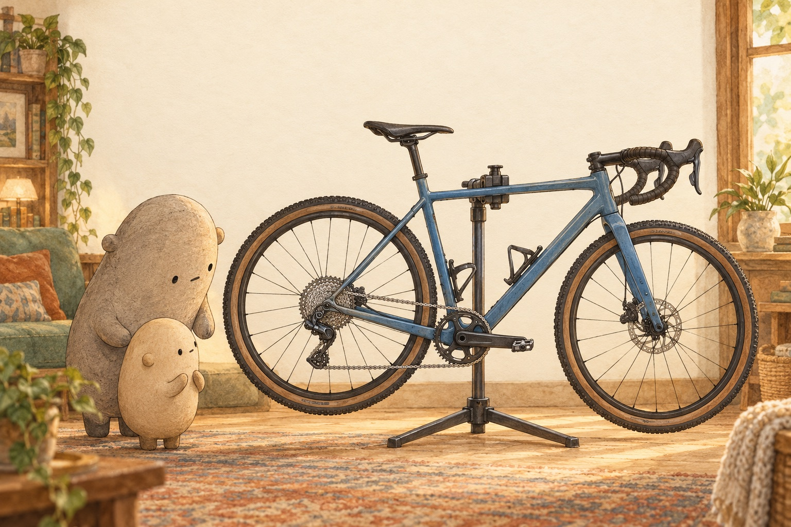

01Where does the chain travel?

Look closer. Follow the chain around the front chainring, back to one cog in the cassette, and through the two small pulley wheels below.
A little explanation. The chain forms one long loop. It grips teeth on a front gear, called a chainring, and on one back gear, called a cog. Turning the pedals pulls the chain and turns the back wheel.
Try this. Use a finger in the air to trace the whole loop without touching the bike. Name the front chainring, back cog, and lower pulley wheels.